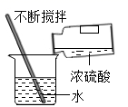

2020年北京市中考化学试题 · 选择题 第1、2、3、4、5题
每小题1分。在每小题给出的四个选项中，选出最符合题目要求的一项。
1. 为预防骨质疏松，应给人体补充的元素是
A. 钙B. 铁C. 锌D. 碘
2.下列气体中，能供给动植物呼吸的是
A. O2B. H2C. N2D. CO2
3.下列含金属元素的物质是
A. H2SB. P2O5C. AgNO3D. H2O
4.下列不属于铁丝在氧气中燃烧现象的是
A. 放出热量B. 产生大量白烟
C. 火星四射D. 生成黑色固体
5.下列操作不正确 是
是
A 稀释浓硫酸
稀释浓硫酸

B. 点燃酒精灯
C. 加热液体 D. 取用固体粉末
D. 取用固体粉末